Regression comparison
Download resultsAggregation weights
\widehat y(x)=y_{\rm mean}+y_{\rm std}\sum_{h=1}^{H}\beta_h\mu_h(x)Coefficients can be negative and need not sum to one. Intervals describe coefficient uncertainty; the dashed reference is DE’s fixed 1/H weight.
BDKN

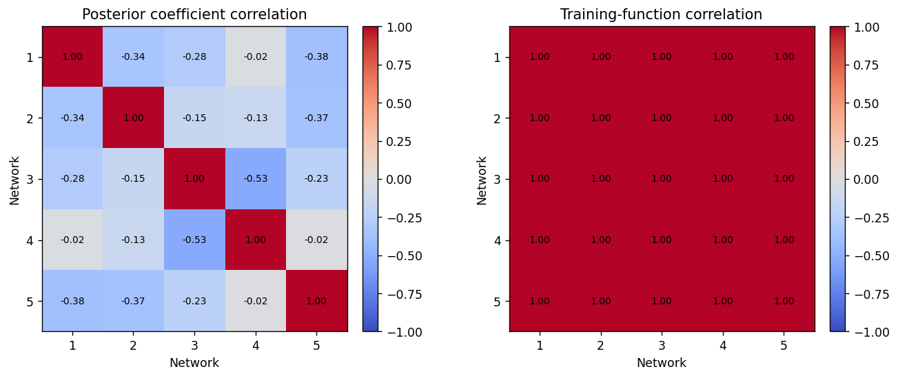


Each density panel uses its own X range for readability; coefficient intervals above share a common axis. Prior reference conditions on fitted noise. Contribution shares use held-out inputs; test targets are used only for scoring.
| Network | β mean | 95% low | 95% high | P(β > 0) | Contribution share | Test RMSE | Test NLL |
|---|---|---|---|---|---|---|---|
| 1 | 0.15904 | -0.40041 | 0.71849 | 0.71299 | 0.15609 | 0.15863 | 0.26733 |
| 2 | 0.10348 | -0.42784 | 0.63481 | 0.64999 | 0.10236 | 0.16842 | 0.62251 |
| 3 | 0.29566 | -0.28358 | 0.87490 | 0.84317 | 0.28899 | 0.17476 | 2.61466 |
| 4 | 0.30206 | -0.08629 | 0.69041 | 0.93702 | 0.30991 | 0.20717 | 1.26128 |
| 5 | 0.14872 | -0.40583 | 0.70327 | 0.70207 | 0.14264 | 0.15734 | 0.32964 |
Functional repulsion · BDKN
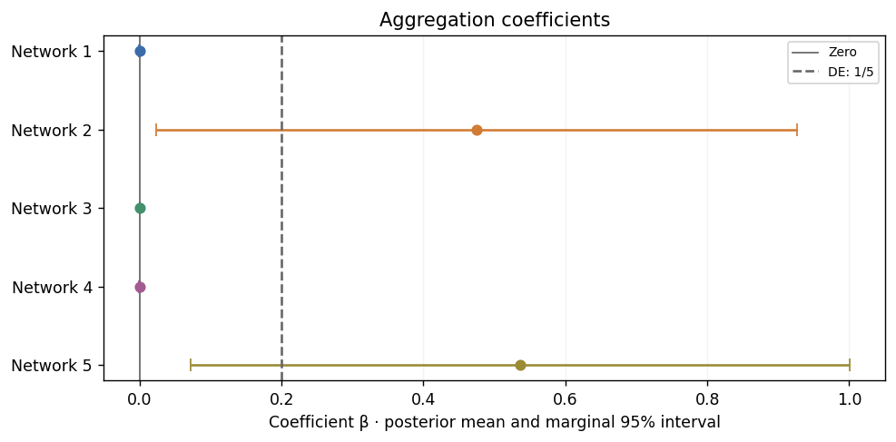
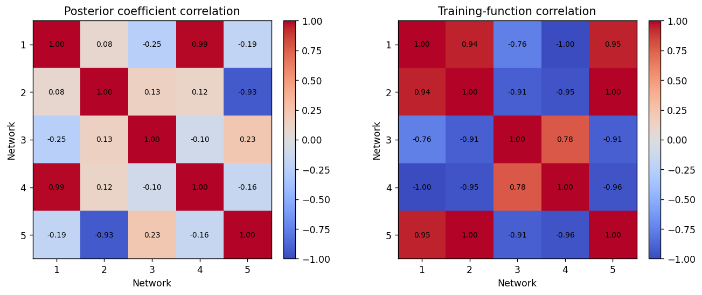
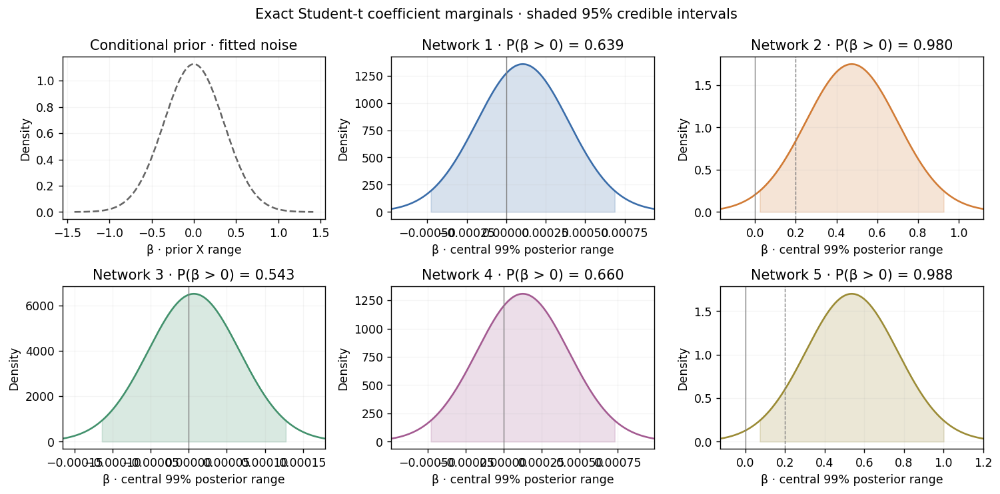
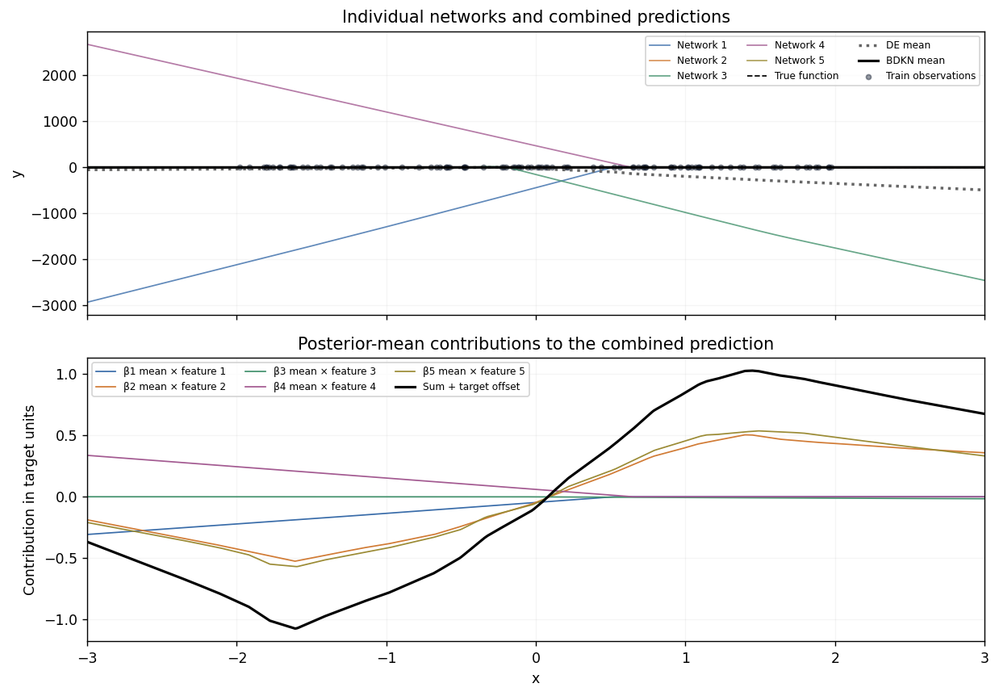
Each density panel uses its own X range for readability; coefficient intervals above share a common axis. Prior reference conditions on fitted noise. Contribution shares use held-out inputs; test targets are used only for scoring.
| Network | β mean | 95% low | 95% high | P(β > 0) | Contribution share | Test RMSE | Test NLL |
|---|---|---|---|---|---|---|---|
| 1 | 0.00010 | -0.00048 | 0.00069 | 0.63939 | 0.09522 | 1267.40820 | 92.54419 |
| 2 | 0.47507 | 0.02348 | 0.92666 | 0.98029 | 0.38028 | 0.16988 | 1.18791 |
| 3 | 0.00001 | -0.00011 | 0.00013 | 0.54283 | 0.00520 | 1100.64085 | 11.15079 |
| 4 | 0.00013 | -0.00048 | 0.00073 | 0.66042 | 0.10703 | 1168.45354 | 10.42362 |
| 5 | 0.53665 | 0.07229 | 1.00101 | 0.98802 | 0.41227 | 0.14592 | 0.31662 |
Weight repulsion · BDKN

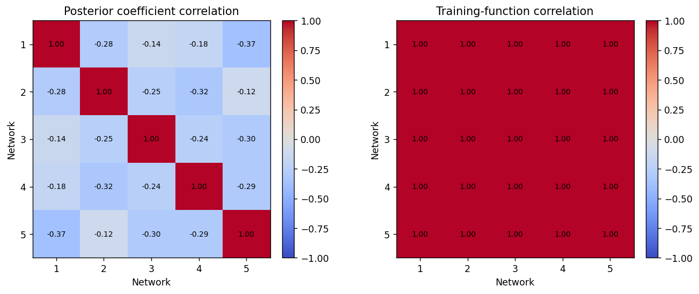

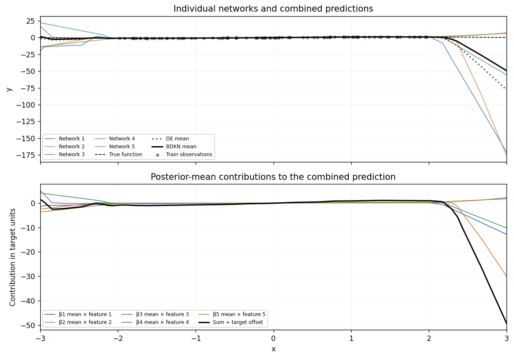
Each density panel uses its own X range for readability; coefficient intervals above share a common axis. Prior reference conditions on fitted noise. Contribution shares use held-out inputs; test targets are used only for scoring.
| Network | β mean | 95% low | 95% high | P(β > 0) | Contribution share | Test RMSE | Test NLL |
|---|---|---|---|---|---|---|---|
| 1 | 0.07531 | -0.38282 | 0.53345 | 0.62750 | 0.21632 | 37.43021 | 7.82361 |
| 2 | 0.17101 | -0.27807 | 0.62009 | 0.77414 | 0.36506 | 32.82891 | 254794514.90121 |
| 3 | 0.18440 | -0.25944 | 0.62824 | 0.79413 | 0.21934 | 12.86519 | 6453330.54383 |
| 4 | 0.29679 | -0.17915 | 0.77273 | 0.89054 | 0.07982 | 2.02361 | 269311.10782 |
| 5 | 0.27634 | -0.21633 | 0.76901 | 0.86577 | 0.11946 | 3.25528 | 333315.89022 |
First-order repulsion · BDKN
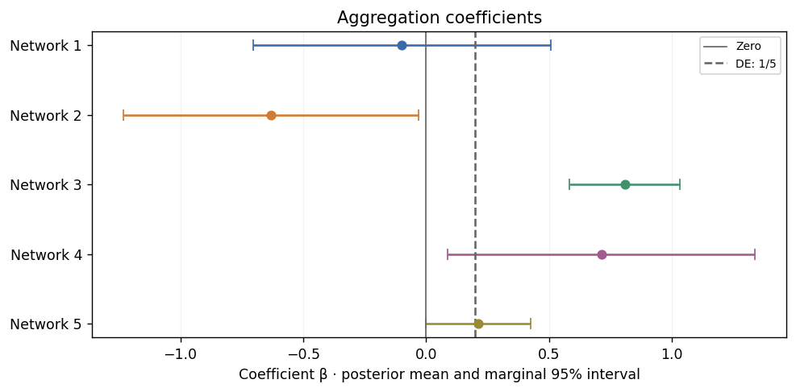
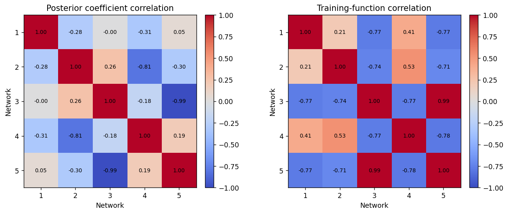
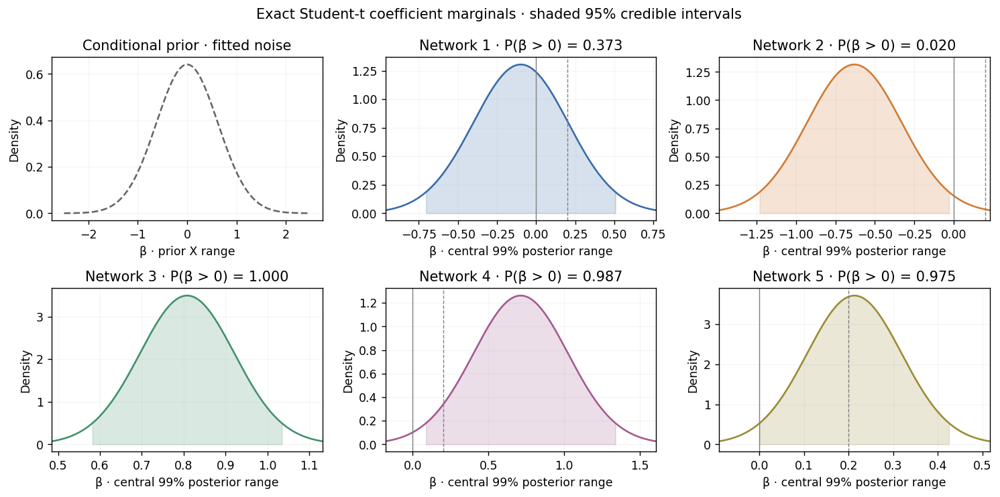
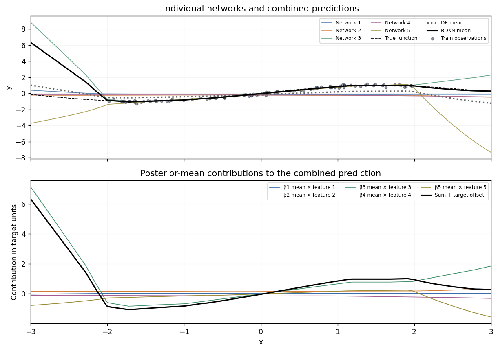
Each density panel uses its own X range for readability; coefficient intervals above share a common axis. Prior reference conditions on fitted noise. Contribution shares use held-out inputs; test targets are used only for scoring.
| Network | β mean | 95% low | 95% high | P(β > 0) | Contribution share | Test RMSE | Test NLL |
|---|---|---|---|---|---|---|---|
| 1 | -0.09883 | -0.70385 | 0.50619 | 0.37328 | 0.00771 | 0.80184 | 1.16777 |
| 2 | -0.62997 | -1.23020 | -0.02973 | 0.01994 | 0.09180 | 0.82297 | 1.16096 |
| 3 | 0.80820 | 0.58218 | 1.03421 | 1.00000 | 0.62363 | 2.17792 | 2.70009 |
| 4 | 0.71331 | 0.08764 | 1.33898 | 0.98707 | 0.09735 | 0.83125 | 1.23505 |
| 5 | 0.21253 | 0.00024 | 0.42482 | 0.97513 | 0.17951 | 2.15838 | 41.78258 |